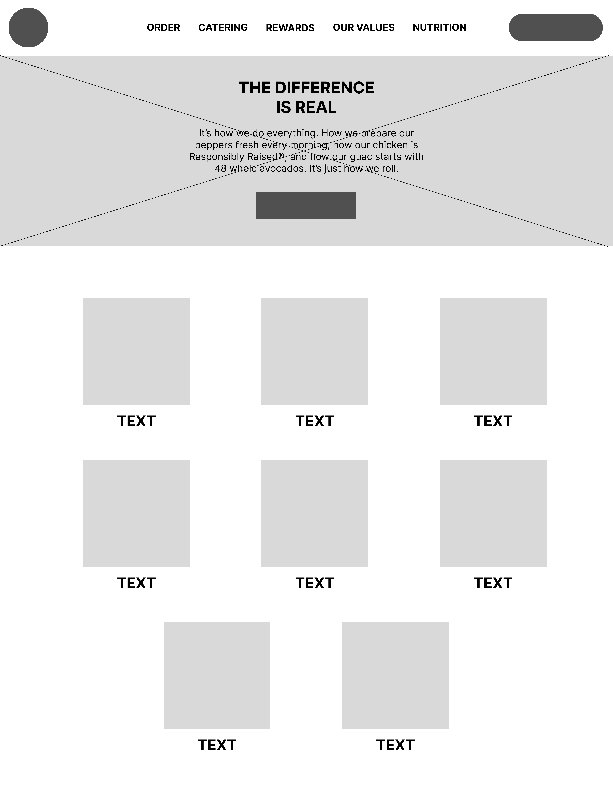

-
Using the favorite website you chose in homework 1, create a wireframe for one page of it using pen/paper, PowerPoint, or any your tool of choice. (use the 'img' tag!) Make sure to let us know what the name of your website is (Use the 'p' tag!)
Chipotle
 -
Try to improve the website you've chosen, and create a redesigned wireframe of one page for the same website using the principles of visual hierarchy that you learned from the article.
redesgins

-
What is the goal of the website? Who is it intended for? How does the design accomplish this? Write 2-3 sentences answering these questions. (Use the 'p' tag again!)
The goal of this website is to allow Chipotle consuemrs to learn about all things Chipotle from the menu, nutrition facts, locations, etc. The design is able to accomplish this by using the navigation bar on the top and putting in the main information that a user may come to this website for.
-
Write 2-3 sentences about what problems your redesign addressed, and how it solved them.
The largest issue my redesign addressed is the confusion of the portion that came right below the main section of the home page. I was confused by what all the different food options meant and if it meant I was going to learn more about the menu or if I was ordering the food which is why I specified that the different images was displaying the menu in which a user can click into in order to learn more. The other main issue I wanted to target was the fact that the section took up so much space on the screen which is why my redesign condenses that section by using a carousel.
NOTE: Make sure to include the wireframe images in the website and don't just put it in your assets folder!
Your wireframes should look something like this: